Denoising Diffusion Probabilistic Models
- Denoising Diffusion Probabilistic Models
- Imports / Setup
- 2D U(1)
- Train Diffusion Model
- Build Diffusion Model with UNet Architecure
- Perform initial training on HMC samples
- HMC Sampling with Diffusion
- Alternate
Imports / Setup
from __future__ import absolute_import, print_function, annotations, division
from dataclasses import dataclass
import sys
import os
import math
import numpy as np
import scipy
import time
from random import randrange
import matplotlib.pyplot as plt
import seaborn as sns
import numpy as npfrom ezpz.dist import setup_torch
port = np.random.randint(5000, 6000)
print(f"Using port: {port}")
RANK = setup_torch(
backend="DDP",
port=f"{port}"
)Using port: 5561Using DDP for distributed trainingGlobal Rank: 0 / 0%matplotlib inline
import matplotlib_inline
matplotlib_inline.backend_inline.set_matplotlib_formats('svg')
from l2hmc.main import build_experiment
from l2hmc.utils.rich import get_console
from l2hmc.utils.plot_helpers import set_plot_style
import opinionated
from l2hmc.diffusion.diffusion import PureMH, MH_Diffusion
from l2hmc.utils.plot_helpers import set_plot_style
from pandas.io.formats import style
import scipy
import time
from random import randrange
from l2hmc.diffusion.diffusion import PureMH, MH_Diffusion
set_plot_style()
console = get_console()
print(console.is_jupyter)
if console.is_jupyter:
console.is_jupyter = False
print(console.is_jupyter)Using device: cpuFailed to download font: Source Sans Pro, skipping!
Failed to download font: Titillium WebRoboto Condensed, skipping!TrueFalse#plt.style.use('opinionated_minimal')
import pandas as pd
import opinionated
with plt.style.context(opinionated.STYLES['opinionated_min']):
#plt.rcParams['image.cmap'] = 'viridis'
sns.set_context('notebook')
df = pd.DataFrame({'x': np.random.randn(100), 'y': np.random.randn(100)})
df.plot.hexbin(x='x', y='y', gridsize=20, cmap='viridis')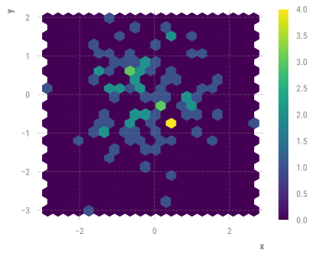
plt.style.use(opinionated.STYLES['opinionated_min'])
sns.set_context('notebook')2D U(1)
from l2hmc.configs import dict_to_list_of_overrides
seed = np.random.randint(0, 2**32)
console.print(f"seed = {seed}")
overrides = {
"seed": f"{seed}",
"precision": "float32",
"init_wandb": False,
"init_aim": False,
"use_wandb": False,
"dynamics": {
"latvolume": [32, 32],
"nleapfrog": 10,
"nchains": 16,
"eps": 0.05,
},
"network": {
"use_batch_norm": False,
},
'annealing_schedule': {
'beta_init': 6.0,
'beta_final': 6.0,
},
}
OVERRIDES = dict_to_list_of_overrides(overrides)seed = 1675333995from pathlib import Path
from l2hmc.common import get_timestamp
from enrich.console import get_theme, Console
console = Console(theme=get_theme())
OUTDIR = Path(
'l2hmc-diffusion-2dU1'
).joinpath(get_timestamp("%Y-%m-%d"))
OUTDIR.mkdir(exist_ok=True, parents=True)
console.print(f"OUTDIR: {OUTDIR}")
date = get_timestamp('%Y-%m-%d')
PLOTS_DIR = OUTDIR.joinpath('plots')
PLOTS_DIR.mkdir(exist_ok=True, parents=True)
console.print(f"Saving figures to: {PLOTS_DIR}")OUTDIR: l2hmc-diffusion-2dU1/2023-09-21Saving figures to: l2hmc-diffusion-2dU1/2023-09-21/plots#os.environ['MASTER_PORT'] = '5436'
exp = build_experiment(
overrides=[
*OVERRIDES,
'framework=pytorch',
'backend=DDP'
]
)[09/21/23 12:23:55][INFO][dist.py:226] - Caught MASTER_PORT:5561 from environment!
[09/21/23 12:23:55][INFO][dist.py:338] - Global Rank: 0 / 0
[09/21/23 12:23:58][INFO][experiment.py:251] - Creating outputs/2023-09-21-122358/pytorch/train
[09/21/23 12:23:58][INFO][experiment.py:251] - Creating outputs/2023-09-21-122358/pytorch/eval
[09/21/23 12:23:58][INFO][experiment.py:251] - Creating outputs/2023-09-21-122358/pytorch/hmc
[09/21/23 12:23:58][INFO][dist.py:226] - Caught MASTER_PORT:5561 from environment!
[09/21/23 12:23:58][INFO][dist.py:226] - Caught MASTER_PORT:5561 from environment!
[09/21/23 12:24:06][INFO][trainer.py:441] - Looking for checkpoints in:
/Users/samforeman/projects/saforem2/l2hmc-qcd/src/l2hmc/checkpoints/U1/2-32-32/nlf-10/xsplit-True/sepnets-True/merge-True/conv-8-16-32-64-128_5-3-3-3-2_2-2-2-2-2/net-16-16-16-16_dp-0.2_bn-False/pytorch
[09/21/23 12:24:06][WARNING][trainer.py:437] - No checkpoints found to load from
[09/21/23 12:24:06][WARNING][trainer.py:437] - Restoring global step from ckpt! self._gstep: 0
[09/21/23 12:24:06][WARNING][trainer.py:437] - Using `torch.optim.Adam` optimizer
[09/21/23 12:24:06][INFO][trainer.py:284] - num_params in model: 958628260
[09/21/23 12:24:09][WARNING][trainer.py:250] - logging with freq 50 for wandb.watchstate = exp.trainer.dynamics.random_state(6.0)
xdim = state.x.flatten().shape[0]
dim = xdim
low_bound = (-np.pi) * np.ones(dim)
high_bound = (np.pi) * np.ones(dim)
sigma = 0.15
retrains = 10
samples_per_retrain = 100
diffusion_prob = 0.1sns.set_context('notebook')
outputs = {}
outputs['hmc'] = exp.trainer.eval(
job_type='hmc',
beta=6.0,
nprint=100,
nchains=16,
eval_steps=1000
)
#hdset = exp.save_dataset(job_type='hmc', nchains=1)[09/21/23 12:24:21][WARNING][trainer.py:437] - Step size `eps` not specified for HMC! Using default: 0.1000 for generic HMC
[09/21/23 12:24:21][WARNING][trainer.py:437] - x.shape (original): torch.Size([16, 2, 32, 32])
[09/21/23 12:24:21][WARNING][trainer.py:437] - x[:nchains].shape: torch.Size([16, 2, 32, 32])
[09/21/23 12:24:21][INFO][trainer.py:1058] - eps=0.1
beta=6.0
nlog=10
table=<rich.table.Table object at 0x2e1b98520>
nprint=100
eval_steps=1000
nleapfrog=20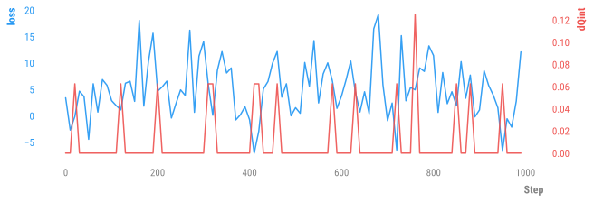
[09/21/23 12:24:24][INFO][trainer.py:1188] - hstep=0 dt=0.024 beta=6.000 loss=3.410 dQsin=0.125 dQint=0.000 energy=1586.502 logprob=1586.502 logdet=0.000 acc=0.472 sumlogdet=0.000 acc_mask=0.500 plaqs=0.909 intQ=0.000 sinQ=0.051
[09/21/23 12:24:27][INFO][trainer.py:1188] - hstep=100 dt=0.026 beta=6.000 loss=2.876 dQsin=0.163 dQint=0.000 energy=1555.800 logprob=1555.800 logdet=0.000 acc=0.593 sumlogdet=0.000 acc_mask=0.688 plaqs=0.912 intQ=-0.125 sinQ=-0.159
[09/21/23 12:24:31][INFO][trainer.py:1188] - hstep=200 dt=0.025 beta=6.000 loss=4.678 dQsin=0.088 dQint=0.063 energy=1569.994 logprob=1569.994 logdet=0.000 acc=0.451 sumlogdet=0.000 acc_mask=0.250 plaqs=0.912 intQ=-0.187 sinQ=-0.149
[09/21/23 12:24:34][INFO][trainer.py:1188] - hstep=300 dt=0.024 beta=6.000 loss=14.041 dQsin=0.094 dQint=0.000 energy=1554.118 logprob=1554.118 logdet=0.000 acc=0.438 sumlogdet=0.000 acc_mask=0.438 plaqs=0.914 intQ=-0.125 sinQ=-0.114
[09/21/23 12:24:38][INFO][trainer.py:1188] - hstep=400 dt=0.024 beta=6.000 loss=-0.739 dQsin=0.199 dQint=0.000 energy=1566.516 logprob=1566.516 logdet=0.000 acc=0.509 sumlogdet=0.000 acc_mask=0.562 plaqs=0.912 intQ=-0.437 sinQ=-0.452
[09/21/23 12:24:41][INFO][trainer.py:1188] - hstep=500 dt=0.045 beta=6.000 loss=1.545 dQsin=0.100 dQint=0.000 energy=1570.837 logprob=1570.837 logdet=0.000 acc=0.448 sumlogdet=0.000 acc_mask=0.562 plaqs=0.911 intQ=0.125 sinQ=0.189
[09/21/23 12:24:45][INFO][trainer.py:1188] - hstep=600 dt=0.025 beta=6.000 loss=3.780 dQsin=0.094 dQint=0.000 energy=1568.012 logprob=1568.012 logdet=0.000 acc=0.463 sumlogdet=0.000 acc_mask=0.500 plaqs=0.913 intQ=0.438 sinQ=0.466
[09/21/23 12:24:50][INFO][trainer.py:1188] - hstep=700 dt=0.023 beta=6.000 loss=-0.902 dQsin=0.113 dQint=0.000 energy=1563.778 logprob=1563.778 logdet=0.000 acc=0.475 sumlogdet=0.000 acc_mask=0.375 plaqs=0.913 intQ=0.688 sinQ=0.628
[09/21/23 12:24:53][INFO][trainer.py:1188] - hstep=800 dt=0.024 beta=6.000 loss=11.416 dQsin=0.061 dQint=0.000 energy=1561.427 logprob=1561.427 logdet=0.000 acc=0.339 sumlogdet=0.000 acc_mask=0.438 plaqs=0.913 intQ=0.813 sinQ=0.755
[09/21/23 12:24:57][INFO][trainer.py:1188] - hstep=900 dt=0.028 beta=6.000 loss=1.114 dQsin=0.127 dQint=0.000 energy=1564.465 logprob=1564.465 logdet=0.000 acc=0.699 sumlogdet=0.000 acc_mask=0.625 plaqs=0.913 intQ=0.938 sinQ=0.893# %matplotlib inline
from l2hmc.common import plot_dataset
sns.set_context('notebook')
hdataset = outputs['hmc']['history'].get_dataset()
plot_dataset(hdataset, outdir=PLOTS_DIR, job_type='HMC')[09/21/23 12:25:06][INFO][plot_helpers.py:1049] - Saving figure to: l2hmc-diffusion-2dU1/2023-09-21/plots/ridgeplots/svgs/energy_ridgeplot.svg
[09/21/23 12:25:09][INFO][plot_helpers.py:1049] - Saving figure to: l2hmc-diffusion-2dU1/2023-09-21/plots/ridgeplots/svgs/logprob_ridgeplot.svg
[09/21/23 12:25:11][INFO][plot_helpers.py:1049] - Saving figure to: l2hmc-diffusion-2dU1/2023-09-21/plots/ridgeplots/svgs/logdet_ridgeplot.svg
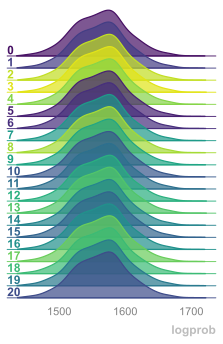
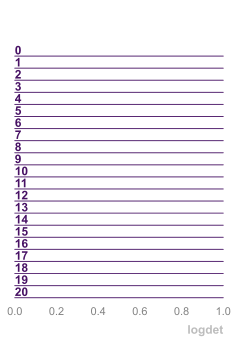
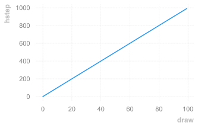
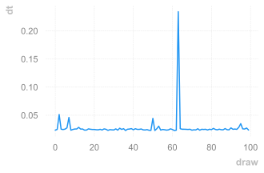
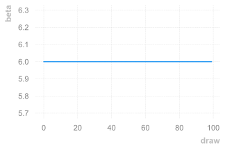
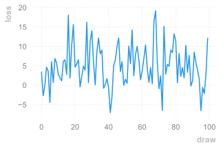
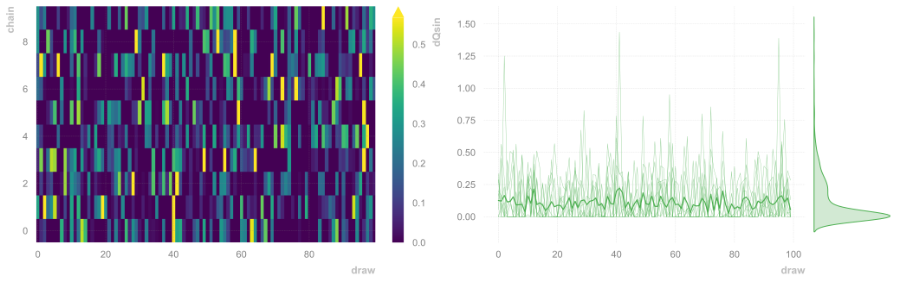


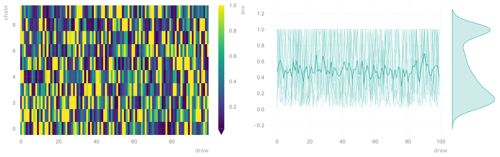
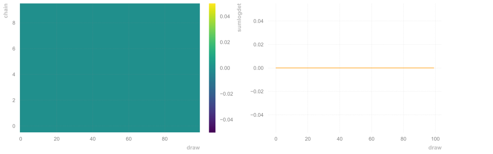
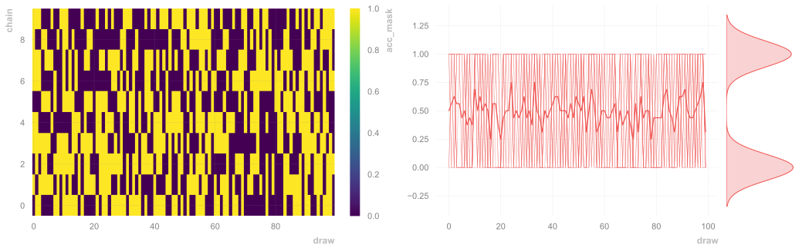
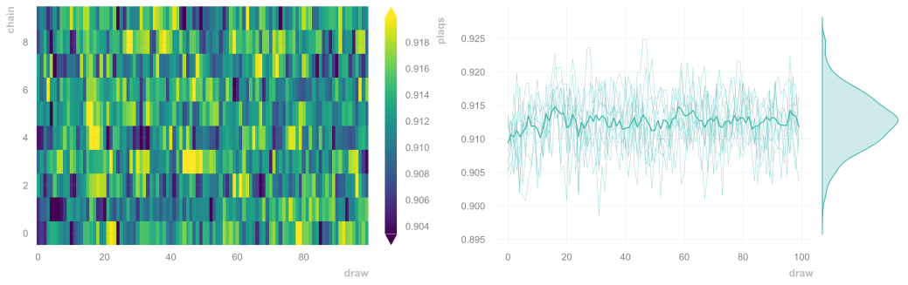
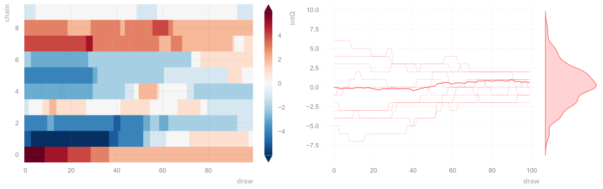
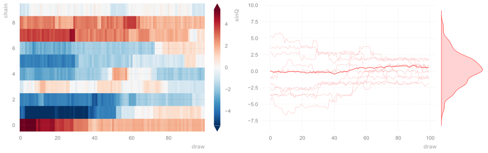
import torch
initial_states = []
state_init = exp.trainer.dynamics.random_state(6.0)
x = state_init.x
beta = state_init.beta
NSAMPLES = 1000
for idx in range(NSAMPLES + int(0.1 * NSAMPLES)):
if idx % 100 == 0:
console.print(f"step: {idx}")
x, metrics = exp.trainer.hmc_step((x, beta))
if idx > int((0.1 * NSAMPLES)):
initial_states.append(x)
initial_states = torch.stack(initial_states).squeeze()
initial_states_np = initial_states.detach().cpu().numpy()step: 0step: 100step: 200step: 300step: 400step: 500step: 600step: 700step: 800step: 900step: 1000initial_states_np.shape(999, 16, 2048)x_ = initial_states_np.reshape(-1, 16, 2, 32, 32)
tmp_ = x_[:, 0, ...]
console.print(f'{x_.shape}')
console.print(f'{tmp_.shape}')(999, 16, 2, 32, 32)(999, 2, 32, 32)from l2hmc.common import savefig
#x_ = initial_states_np[:100].reshape(-1, 2, 32, 32)
tmp_ = x_[:, 0, ...]
fig, ax = plt.subplots()
sns.kdeplot(
x=tmp_[-100:, 0].flatten(),
y=tmp_[-100:, 1].flatten(),
# ax=ax,
cmap='viridis',
# ax=axes[0],
# cmap="Blues",
shade=False,
# bw_adjust=0.5,
thresh=0
)
ax.set_xlim((-4, 4))
ax.set_ylim((-4, 4))
savefig(
f'hmc_samples-{NSAMPLES}',
Path(PLOTS_DIR),
tstamp=True,
)Saving hmc_samples-1000-2023-09-21-122840 to l2hmc-diffusion-2dU1/2023-09-21/plots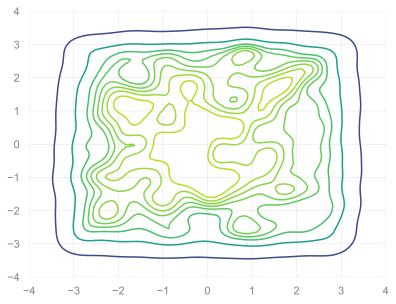
class Diffusion:
def __init__(
self,
noise_steps: int = 1000,
beta_start: float = 1e-4,
beta_end: float = 0.02,
nchannels: int = 2,
img_size: int = 256,
device: str = "cuda"
):
self.noise_steps = noise_steps
self.beta_start = beta_start
self.beta_end = beta_end
self.img_size = img_size
self.device = device
self.nchannels = nchannels
self.beta = self.prepare_noise_schedule().to(device)
self.alpha = 1. - self.beta
self.alpha_hat = torch.cumprod(self.alpha, dim=0)
def prepare_noise_schedule(self):
return torch.linspace(self.beta_start, self.beta_end, self.noise_steps)
def noise_images(self, x, t):
sqrt_alpha_hat = torch.sqrt(self.alpha_hat[t])[:, None, None, None]
sqrt_one_minus_alpha_hat = torch.sqrt(
1 - self.alpha_hat[t]
)[:, None, None, None]
eps = torch.randn_like(x)
return sqrt_alpha_hat * x + sqrt_one_minus_alpha_hat * eps, eps
def sample_timesteps(self, n):
return torch.randint(low=1, high=self.noise_steps, size=(n,))
def sample(self, model, n):
# console.print(f"Sampling {n} new images....")
model.eval()
with torch.no_grad():
x = torch.randn(
(n, self.nchannels, self.img_size, self.img_size)
).to(self.device)
sample_bar = tqdm(
reversed(range(1, self.noise_steps)),
position=0,
total=self.noise_steps - 1,
dynamic_ncols=True,
)
for i in sample_bar:
t = (torch.ones(n) * i).long().to(self.device)
predicted_noise = model(x, t)
alpha = self.alpha[t][:, None, None, None]
alpha_hat = self.alpha_hat[t][:, None, None, None]
beta = self.beta[t][:, None, None, None]
if i > 1:
noise = torch.randn_like(x)
else:
noise = torch.zeros_like(x)
x = (
(1 / torch.sqrt(alpha))
* (
x
- ((1 - alpha) / (torch.sqrt(1 - alpha_hat)))
* predicted_noise
)
+ (torch.sqrt(beta) * noise)
)
model.train()
x = (x + np.pi) % (2 * np.pi) - np.pi
return xinitial_states.shapetorch.Size([999, 16, 2048])Train Diffusion Model
import torchvision
import os
import random
from pathlib import Path
import torch
import torchvision
import torchvision.transforms as T
import numpy as np
from PIL import Image
#from fastdownload import FastDownload
from torch.utils.data import DataLoader
def save_images(images, path, **kwargs):
grid = torchvision.utils.make_grid(images, **kwargs)
ndarr = grid.permute(1, 2, 0).to('cpu').numpy()
im = Image.fromarray(ndarr)
im.save(path)Build Diffusion Model with UNet Architecure
from torch import nn
from torch import optim
import torch.nn.functional as F
from tqdm.auto import tqdm
from torch.utils.data import DataLoader
from torch.utils.data import TensorDataset
from l2hmc.common import savefig
from l2hmc.diffusion.modules import NoiseScheduler, UNet
from l2hmc.diffusion import ddpm
DEVICE = 'cuda' if torch.cuda.is_available() else 'cpu'
config = {
'channels_in': 2,
'channels_out': 2,
'train_batch_size': 5,
'learning_rate': 0.001,
'num_epochs': 1,
'noise_steps': 100,
'beta': 6.0,
'img_size': 32,
'retrains': 10,
'samples_per_retrain': 500,
'diffusion_prob': 0.1,
}
model = UNet(c_in=2, c_out=2)
dataset = TensorDataset(initial_states.reshape(-1, 2, 32, 32))
dataloader = DataLoader(
dataset,
batch_size=config["train_batch_size"],
shuffle=False,
drop_last=True
)
optimizer = optim.AdamW(model.parameters(), lr=config['learning_rate'])
mse = nn.MSELoss()
diffusion = Diffusion(
noise_steps=100,
img_size=32,
device=DEVICE,
nchannels=2,
)
#logger = SummaryWriter(os.path.join("runs", args.run_name))
l = len(dataloader)
run_name = 'diffusion2dU1'Perform initial training on HMC samples
from torch import optim
device = 'cpu'
#dataloader = get_data(args)
#model = UNet().to(device)
sampled_images_history = []
for epoch in range(config['num_epochs']):
console.print(f"Starting epoch {epoch}:")
pbar = tqdm(dataloader)
for i, images in enumerate(pbar):
if isinstance(images, (tuple, list)) and len(images) == 1:
images = images[0]
t = diffusion.sample_timesteps(images.shape[0]).to(device)
x_t, noise = diffusion.noise_images(images, t)
predicted_noise = model(x_t, t)
loss = mse(noise, predicted_noise)
optimizer.zero_grad()
loss.backward()
optimizer.step()
pbar.set_postfix({'epoch': epoch, 'batch': i, 'MSE': loss.item()})
console.print(f'epoch: {epoch}, loss: {loss.item()}')
sampled_images = diffusion.sample(model, n=images.shape[0])
sampled_images_history.append(sampled_images)
sns.set_context('notebook')
#tmp = initial_states.reshape(-1, 2, 32, 32)
fig, ax = plt.subplots(ncols=2)
_ = ax[0].imshow(sampled_images[0, 0, :, :])
_ = ax[1].imshow(sampled_images[0, 1, :, :])
_ = ax[0].set_xticklabels([])
_ = ax[1].set_xticklabels([])
_ = ax[0].set_yticklabels([])
_ = ax[1].set_yticklabels([])
_ = ax[0].set_title(r"$U_{0}$", loc='center')
_ = ax[1].set_title(r"$U_{1}$", loc='center')
_ = fig.suptitle('Diffusion Samples', y=0.8)
plt.show()
savefig(fname=f'sampled_image_epoch{epoch}', outdir=PLOTS_DIR, tstamp=True)
MODEL_FILE = OUTDIR.joinpath("models", f"unet-diffusion-epoch{epoch}.pt")
MODEL_FILE.parent.mkdir(exist_ok=True, parents=True)
console.print(f"Saving model checkpoint to: {MODEL_FILE}")
torch.save(model.state_dict(), MODEL_FILE)Starting epoch 0:{"model_id":"19b415c346b24bef8b60336d7f7bc355","version_major":2,"version_minor":0}epoch: 0, loss: 0.6023472547531128{"model_id":"eea24504754f4cb9ab4d9925a6225c10","version_major":2,"version_minor":0}
Saving sampled_image_epoch0-2023-09-21-124506 to l2hmc-diffusion-2dU1/2023-09-21/plotsSaving model checkpoint to: l2hmc-diffusion-2dU1/2023-09-21/models/unet-diffusion-epoch0.pt<Figure size 640x480 with 0 Axes>sns.set_context('notebook')
tmp = initial_states.reshape(-1, 2, 32, 32)
fig, ax = plt.subplots(ncols=2)
_ = ax[0].imshow(tmp[0, 0, :, :])
_ = ax[1].imshow(tmp[0, 1, :, :])
_ = ax[0].set_title(r"$U_{0}$", loc='center')
_ = ax[0].set_xticklabels([])
_ = ax[1].set_xticklabels([])
_ = ax[0].set_yticklabels([])
_ = ax[1].set_yticklabels([])
_ = ax[1].set_title(r"$U_{1}$", loc='center')
_ = fig.suptitle('HMC Samples', y=0.8)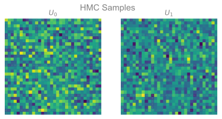
sampled_images_history_ = torch.stack(sampled_images_history)sampled_images_history_.shapetorch.Size([1, 5, 2, 32, 32])sns.set_context('notebook')
fig, ax = plt.subplots(ncols=2)
_ = ax[0].imshow(sampled_images_history_[0][0][0])
_ = ax[1].imshow(sampled_images_history_[0][0][1])
_ = ax[0].set_xticklabels([])
_ = ax[1].set_xticklabels([])
_ = ax[0].set_yticklabels([])
_ = ax[1].set_yticklabels([])
_ = ax[0].set_title(r"$U_{0}$", loc='center')
_ = ax[1].set_title(r"$U_{1}$", loc='center')
_ = fig.suptitle('Diffusion Samples', y=0.85)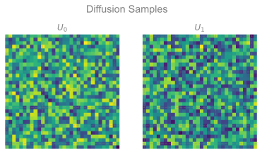
for idx in range(sampled_images_history_.shape[0]):
q = exp.trainer.lattice.charges(x=sampled_images_history_[idx])
console.print(f'{idx}: {q}')0: Charges(intQ=tensor([ 5.0000e+00, -4.0000e+00, -6.0000e+00, -4.5535e-07, 1.0000e+00]), sinQ=tensor([ 1.6426, -1.7244, -4.4651, 0.5680, 0.7046]))HMC Sampling with Diffusion
#for retrain_iter in range(config['retrains']):
state = exp.trainer.dynamics.random_state(config['beta'])
x = state.x
histories = {}
samples = []
hmc_samples = []
diffusion_samples = []
global_step = 0
watcher = {}
update_types = []
combined_samples = {}global_step0for retrain_iter in range(2):
console.print(f'retrain_iter: {retrain_iter}')
ndiff_acc = 0
ndiff_proposed = 0
histories[retrain_iter] = {
'diffusion': [],
'hmc': [],
}
#for idx in range(config['samples_per_retrain']):
sbar = tqdm(range(10))
for idx in sbar:
t0_ = time.perf_counter()
if idx % 100 == 0:
console.print(f'sample idx: {idx}')
rand = np.random.uniform()
if (retrain_iter >= 1) and rand < diffusion_prob:
console.print(f'rand: {rand} < {diffusion_prob}')
# Sample from diffusion model
x_ = diffusion.sample(model, n=x.shape[0])
ll_ = exp.trainer.dynamics.potential_energy(x_, config['beta'])
ll = exp.trainer.dynamics.potential_energy(x, config['beta'])
ratio = ll_ / ll
a = torch.min(torch.ones_like(ratio), ratio)
u = torch.rand(a.shape)
#u = np.random.uniform()
#for jdx in range(u.shape[0]):
# if u[jdx] < a[jdx]:
# samples.append(x_[jdx])
# diffusion_samples.append(x_[jdx])
#x = torch.where((u < a), x_, x.reshape_as(x_)).reshape_as(x)
x = torch.where((u < a)[:, None, None, None], x_, x.reshape_as(x_))
samples.append(x)
diffusion_samples.append(x)
combined_samples[global_step] = x
watcher[global_step] = 'diffusion'
#diffusion_samples.extend(x)
#samples.extend(x)
#ndiff_acc +=
#if u < a:
# console.print('Accepted diffusion sample!')
# console.print(f'{ndiff_acc} / {ndiff_proposed}')
# ndiff_acc += 1
# x = x_
# diffusion_samples.append(x)
# samples.append(x)
else:
# Oherwise, HMC
x, metrics = exp.trainer.hmc_step((x, config['beta']))
hmc_samples.append(x)
samples.append(x)
combined_samples[global_step] = x
watcher[global_step] = 'HMC'
smetrics = {
'idx': idx,
'global_step': global_step,
'dt': time.perf_counter() - t0_,
}
global_step += 1
#smetrics |= {
# f'{k}': {torch.tensor(v).mean().item()} for k, v in metrics.items()
#}
sbar.set_postfix(smetrics)
# Train loop
dataset = TensorDataset(
torch.stack(hmc_samples).reshape(-1, 2, 32, 32)
)
dataloader = DataLoader(
dataset,
shuffle=False,
drop_last=True,
batch_size=config["train_batch_size"],
)
pbar = tqdm(dataloader)
for i, batch in enumerate(pbar):
if i == 0:
console.print('Retraining...')
if isinstance(batch, (tuple, list)) and len(batch) == 1:
batch, = batch
batch = batch.reshape(-1, 2, 32, 32)
t0 = time.time()
t = diffusion.sample_timesteps(batch.shape[0]).to(device)
x_t, noise = diffusion.noise_images(batch, t)
predicted_noise = model(x_t, t)
loss = mse(noise, predicted_noise)
optimizer.zero_grad()
loss.backward()
optimizer.step()
t1 = time.time()
pbar.set_postfix(
{
'global_step': global_step,
'retrain_iter': retrain_iter,
'batch': i,
'dt': t1 - t0,
'MSE': loss.item()
}
)retrain_iter: 0{"model_id":"17132d7ca8624fa387ee9467e4f1fa4d","version_major":2,"version_minor":0}sample idx: 0{"model_id":"0ed1080fdebd4f7b9aae80db0d36b96b","version_major":2,"version_minor":0}Retraining...retrain_iter: 1{"model_id":"d0346019e21b4d2a9b624dc59e84015b","version_major":2,"version_minor":0}sample idx: 0rand: 0.05506106760134255 < 0.1{"model_id":"c02b09d53ada46a194a47921f0ab3cba","version_major":2,"version_minor":0}rand: 0.07860283644524213 < 0.1{"model_id":"184df3f1c9714ece9756866b2617ed02","version_major":2,"version_minor":0}{"model_id":"eaa0d84229c04618b7a2bffe2a4b1739","version_major":2,"version_minor":0}Retraining...console.print('\n'.join([f"{i.shape}" for i in samples[:100]]))torch.Size([16, 2048])
torch.Size([16, 2048])
torch.Size([16, 2048])
torch.Size([16, 2048])
torch.Size([16, 2048])
torch.Size([16, 2048])
torch.Size([16, 2048])
torch.Size([16, 2048])
torch.Size([16, 2048])
torch.Size([16, 2048])
torch.Size([16, 2048])
torch.Size([16, 2048])
torch.Size([16, 2048])
torch.Size([16, 2048])
torch.Size([16, 2048])
torch.Size([16, 2048])
torch.Size([16, 2048])
torch.Size([16, 2048])
torch.Size([16, 2048])
torch.Size([16, 2048])
torch.Size([16, 2048])
torch.Size([16, 2048])
torch.Size([16, 2048])
torch.Size([16, 2048])
torch.Size([16, 2048])
torch.Size([16, 2048])
torch.Size([16, 2048])
torch.Size([16, 2, 32, 32])
torch.Size([16, 2048])
torch.Size([16, 2, 32, 32])samples_ = torch.stack([i.reshape(-1, 2, 32, 32) for i in samples])
samples_.shapetorch.Size([30, 16, 2, 32, 32])len(hmc_samples)28len(diffusion_samples)2hmc_samples_ = torch.stack([i.reshape(-1, 2, 32, 32) for i in hmc_samples])
diffusion_samples_ = torch.stack(
[i.reshape(-1, 2, 32, 32) for i in diffusion_samples]
)hmc_samples_.shapetorch.Size([28, 16, 2, 32, 32])diffusion_samples_.shapetorch.Size([2, 16, 2, 32, 32])samples_.shapetorch.Size([30, 16, 2, 32, 32])def calc_plaqs(x):
return torch.stack([
exp.trainer.lattice.plaqs(
x[:, idx]
) for idx in range(x.shape[1])
], -1)
def calc_intQ(x):
return torch.stack([
exp.trainer.lattice.int_charges(
x[:, idx]
) for idx in range(x.shape[1])
], -1)
def calc_sinQ(x):
return torch.stack([
exp.trainer.lattice.sin_charges(
x[:, idx]
) for idx in range(x.shape[1])
], -1)samples_init_ = initial_states.reshape(-1, initial_states.shape[1], 2, 32, 32)
samples_init_.shapetorch.Size([999, 16, 2, 32, 32])metrics_init_ = {
'plaqs': calc_plaqs(samples_init_),
'intQ': calc_intQ(samples_init_),
'sinQ': calc_sinQ(samples_init_)
}
metrics_ = {
'plaqs': calc_plaqs(samples_),
'intQ': calc_intQ(samples_),
'sinQ': calc_sinQ(samples_)
}
metrics_hmc_ = {
'plaqs': calc_plaqs(hmc_samples_),
'intQ': calc_intQ(hmc_samples_),
'sinQ': calc_sinQ(hmc_samples_)
}
metrics_diffusion_ = {
'plaqs': calc_plaqs(diffusion_samples_),
'intQ': calc_intQ(diffusion_samples_),
'sinQ': calc_sinQ(diffusion_samples_)
}metrics_['plaqs'].shapetorch.Size([30, 16])console.print('\n'.join([f"{k}: {v}" for k, v in watcher.items()]))0: HMC
1: HMC
2: HMC
3: HMC
4: HMC
5: HMC
6: HMC
7: HMC
8: HMC
9: HMC
10: HMC
11: HMC
12: HMC
13: HMC
14: HMC
15: HMC
16: HMC
17: HMC
18: HMC
19: HMC
20: HMC
21: HMC
22: HMC
23: HMC
24: HMC
25: HMC
26: HMC
27: diffusion
28: HMC
29: diffusionfig, ax = plt.subplots()
_ = ax.plot(metrics_['plaqs'][:, 0], label='Combined')
_ = ax.plot(metrics_hmc_['plaqs'][:, 0], label='HMC')
_ = ax.plot(metrics_diffusion_['plaqs'][:, 0], label='Diffusion')
#_ = ax.plot(metrics_hmc1['plaqs'], label='HMC 1')
#_ = ax.plot(metrics_diff_['plaqs'], label='Diffusion')
_ = ax.legend(loc='upper left', bbox_to_anchor=(1.05, 1.00))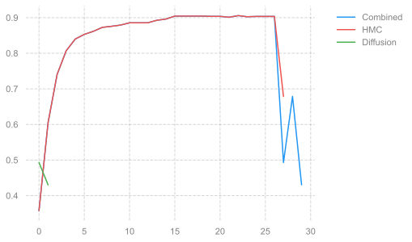
fig, ax = plt.subplots(ncols=3, figsize=(14, 4))
for idx, (key, val) in enumerate(metrics_init_.items()):
_ = ax[idx].plot(val[:, 0], label='HMC (Initial Samples)')
_ = ax[idx].set_ylabel(key, loc='center')
_ = ax[idx].set_xlabel('Draw', loc='center')
#_ = ax[idx].legend(loc='best', frameon=True, edgecolor="#838383")
_ = fig.suptitle(f"Initial HMC States", y=0.92)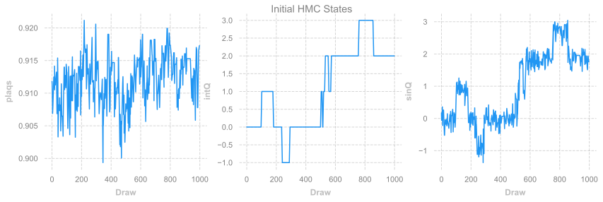
fig, ax = plt.subplots(ncols=3, figsize=(14, 4))
for idx, (key, val) in enumerate(metrics_.items()):
_ = ax[idx].plot(val[:, 0], label='Combined')
_ = ax[idx].set_ylabel(key, loc='center')
_ = ax[idx].set_xlabel('Draw', loc='center')
#_ = ax[idx].legend(loc='best', frameon=True, edgecolor="#838383")
_ = fig.suptitle(f"Combined Samples", y=0.92)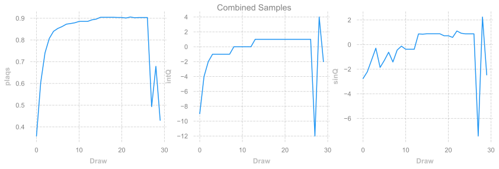
fig, ax = plt.subplots(ncols=3, figsize=(14, 4))
for idx, (key, val) in enumerate(metrics_hmc_.items()):
_ = ax[idx].plot(val[:, 0], label='HMC')
_ = ax[idx].set_ylabel(key, loc='center')
_ = ax[idx].set_xlabel('Draw', loc='center')
_ = fig.suptitle(f"Generated HMC States", y=0.92)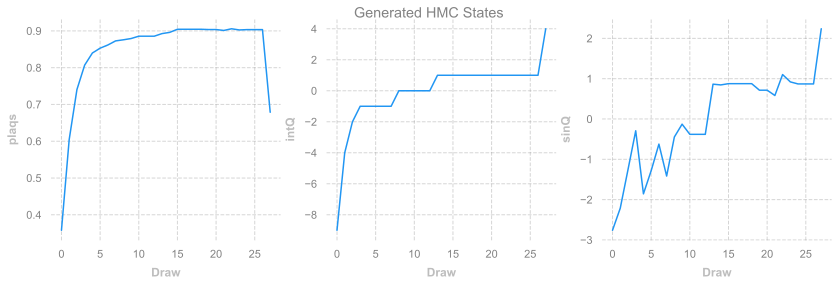
fig, ax = plt.subplots(ncols=3, figsize=(14, 4))
for idx, (key, val) in enumerate(metrics_diffusion_.items()):
_ = ax[idx].plot(val[:, 0], label='Diffusion')
_ = ax[idx].set_ylabel(key, loc='center')
_ = ax[idx].set_xlabel('Draw', loc='center')
_ = fig.suptitle(f"Generated Diffusion States", y=0.92)
from l2hmc.lattice.u1.pytorch.lattice import plaq_exact
plaq_exact(torch.tensor(6.0))tensor(0.9124)fig, ax = plt.subplots()
#_ = plt.hist(metrics_['intQ'].flatten(), color='C0', alpha=0.6, label='Combined', edgecolor='none')
_ = ax.hist(
metrics_diffusion_['intQ'].flatten(),
color='C0',
alpha=0.6,
edgecolor='none',
label='Diffusion',
density=True,
)
_ = ax.hist(
metrics_hmc_['intQ'].flatten(),
color='C1',
alpha=0.6,
edgecolor='none',
label='HMC',
density=True,
)
_ = ax.legend(loc='best', frameon=True, edgecolor='#666666')
_ = ax.set_xlabel(r"$Q$", loc='center')
_ = ax.set_title('Topological Charge ($Q$) Distribution', loc='center')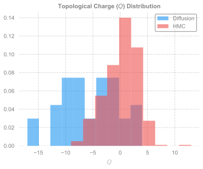
fig, ax = plt.subplots()
_ = plt.plot(metrics_['plaqs'][:, 0], color='C0', label='Diffusion')
_ = plt.plot(metrics_hmc_['plaqs'][:, 0], color='C1', label='HMC')
_ = ax.legend(loc='best', frameon=True, edgecolor='#666666', ncols=2)
_ = ax.set_ylabel(r"$\left\langle U_{\mu\nu}\right\rangle $", loc='center')
_ = ax.set_xlabel(f"Draw", loc='center')
wloops = {
'hmc': [
exp.trainer.lattice.wilson_loops(i) for i in hmc_samples_
],
'diffusion': [
exp.trainer.lattice.wilson_loops(i) for i in diffusion_samples_
],
}
plaqs = {
'hmc': [
exp.trainer.lattice.plaqs(i) for i in hmc_samples_
],
'diffusion': [
exp.trainer.lattice.plaqs(i) for i in diffusion_samples_
],
}wlhmc = torch.stack(wloops['hmc']).squeeze()
wldiff = torch.stack(wloops['diffusion']).squeeze()wlhmc.shapetorch.Size([28, 16, 32, 32])_ = plt.tight_layout()
for idx in range(2):
fig, ax = plt.subplots(ncols=2)
_ = ax[0].imshow(wlhmc[idx, 0])
_ = ax[0].set_title("HMC", loc='center')
_ = ax[1].imshow(wldiff[idx, 0])
_ = ax[1].set_title("Diffusion", loc='center')
_ = fig.suptitle(r"$U_{\mu\nu}$", y=0.8)
for ax_ in ax:
_ = ax_.set_xticklabels([])
_ = ax_.set_yticklabels([])<Figure size 640x480 with 0 Axes>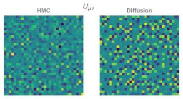

qhmc = metrics_hmc_['intQ']
qdiff = metrics_diffusion_['intQ']
qhmc.shapetorch.Size([28, 16])phmc = torch.stack(plaqs['hmc']).squeeze()
pdiff = torch.stack(plaqs['diffusion']).squeeze()
phmc.shapetorch.Size([28, 16])pdiff.shapetorch.Size([2, 16])fig, ax = plt.subplots()
_ = ax.hist(
metrics_['plaqs'].flatten(),
color='C1',
histtype='step',
stacked=True,
density=True,
label='HMC',
linewidth=1.5
)
_ = ax.hist(
metrics_diffusion_['plaqs'].flatten(),
color='C0',
histtype='step',
stacked=True,
density=True,
label='Diffusion',
linewidth=1.5
)
_ = ax.hist(
metrics_hmc_['plaqs'].flatten(),
color='C2',
histtype='step',
stacked=True,
density=True,
label='Combined',
linewidth=1.5
)
_ = ax.set_xlabel(r"$U_{\mu\nu}$", loc='center')
_ = ax.legend(
loc='upper left',
frameon=True,
#ncols=2,
bbox_to_anchor=(0.55, 1.00),
edgecolor="#838383",
)
_ = ax.set_title('Plaquette Distribution', loc='center')
fig, ax = plt.subplots()
_ = ax.hist(
metrics_['intQ'].flatten(),
color='C1',
histtype='step',
stacked=True,
density=True,
label='HMC',
linewidth=1.5
)
_ = ax.hist(
metrics_diffusion_['intQ'].flatten(),
color='C0',
histtype='step',
stacked=True,
density=True,
label='Diffusion',
linewidth=1.5
)
_ = ax.hist(
metrics_hmc_['intQ'].flatten(),
color='C2',
histtype='step',
stacked=True,
density=True,
label='Combined',
linewidth=1.5
)
_ = ax.set_xlabel('$Q_{\mathbb{Z}}$', loc='center')
_ = ax.legend(
loc='upper left',
frameon=True,
#ncols=2,
bbox_to_anchor=(0.55, 1.00),
edgecolor="#838383",
)
_ = ax.set_title('Charge Distribution', loc='center')
global_step = 0
frames = []
losses = []
print("Training model...")
for epoch in range(config["num_epochs"]):
model.train()
progress_bar = tqdm(total=len(dataloader))
progress_bar.set_description(f"Epoch {epoch}")
for step, batch in enumerate(dataloader):
t = diffusion.sample_timesteps(images.shape[0]).to(device)
noise = torch.randn(batch.shape)
timesteps = torch.randint(
0, noise_scheduler.num_timesteps, (batch.shape[0],)
).long()
#noisy = noise_scheduler.add_noise(batch, noise, timesteps)
noisy = noise_scheduler.noise_images(batch, timesteps)
noise_pred = model(noisy, timesteps)
loss = F.mse_loss(noise_pred, noise)
loss.backward(loss)
nn.utils.clip_grad_norm_(model.parameters(), 1.0)
optimizer.step()
optimizer.zero_grad()
progress_bar.update(1)
logs = {"loss": loss.detach().item(), "step": global_step}
losses.append(loss.detach().item())
progress_bar.set_postfix(**logs)
global_step += 1
progress_bar.close()
if epoch % config["save_images_step"] == 0 or epoch == config["num_epochs"] - 1:
# generate data with the model to later visualize the learning process
model.eval()
sample = torch.randn(config["eval_batch_size"], 2)
timesteps = list(range(len(noise_scheduler)))[::-1]
for i, t in enumerate(tqdm(timesteps)):
t = torch.from_numpy(np.repeat(t, config["eval_batch_size"])).long()
with torch.no_grad():
residual = model(sample, t)
sample = noise_scheduler.step(residual, t[0], sample)
frames.append(sample.numpy())dataset[6]len(dataloader)eval_batch_size = 10
num_timesteps = 50
plot_step = 5
noise_scheduler = ddpm.NoiseScheduler(num_timesteps=num_timesteps)
sample = torch.randn(eval_batch_size, 2)
timesteps = list(range(num_timesteps))[::-1]
samples = []
steps = []
retrains = 10
diffusion_prob = 0.3
samples_per_retrain = 100eval_batch_size = 10
t = torch.from_numpy(np.repeat(timesteps[0], eval_batch_size)).long()
with torch.no_grad():
residual = model(sample, t)
sample_ = noise_scheduler.step(residual, t[0], sample)sample.shaperesidual.shapesample_.shapediffusion_samples = []
hmc_samples = []
beta = 1.
for retrain_iter in range(retrains):
console.print(f'retrain_iter: {retrain_iter}')
ndiff_acc = 0
ndiff_proposed = 0
for idx in range(samples_per_retrain):
console.print(f'sample idx: {idx}')
rand = np.random.uniform()
if rand < diffusion_prob:
ndiff_proposed += 1
rand_pick = randrange(len(dataloader))
#theta_prime = dataset[rand_pick]
t = torch.from_numpy(np.repeat(t, eval_batch_size)).long()
with torch.no_grad():
residual = model(sample, t)
sample_ = noise_scheduler.step(residual, t[0], sample)
ratio = (
log_likelihood_2dU1(sample_, 2)
/ log_likelihood_2dU1(sample, 2)
)
a = min(1, ratio)
u = np.random.uniform()
if u < a:
ndiff_acc += 1
sample = sample_
diffusion_samples.append(sample)
else:
sample_, metrics = exp.trainer.hmc_step((sample_, beta))
hmc_samples.append(sample)for i, t in enumerate(tqdm(timesteps)):
t = torch.from_numpy(np.repeat(t, eval_batch_size)).long()
with torch.no_grad():
residual = model(sample, t)
sample = noise_scheduler.step(residual, t[0], sample)
if (i + 1) % plot_step == 0:
samples.append(sample.numpy())
steps.append(i + 1)Alternate
diffusion_ = DiffusionAlt(img_size=64, device='cpu')unetimage = torch.rand(1, 2, 64, 64)
t = diffusion_.sample_timesteps(image.shape[0]).to('cpu')
unet(image, t)diffusion_.sample(Citation
BibTeX citation:
@online{foreman2023,
author = {Foreman, Sam},
title = {L2hmc-Qcd},
date = {2023-10-19},
url = {https://saforem2.github.io/l2hmc-qcd},
langid = {en}
}
For attribution, please cite this work as:
Foreman, Sam. 2023. “L2hmc-Qcd.” October 19, 2023. https://saforem2.github.io/l2hmc-qcd.